Flat Ride Models 2
From Theme Park Builder 3D
Welcome to the Flat Ride Page. Here you will find many flat rides either wanted, Works In Progress or Done and in the model repository waiting to become part of Theme Park Builder 3D. For Coaster Rides Models, Other Track Ride Models, Specialty Ride models, Walk-Through, Mobile Shows such as parades, Stage Shows or Ride Add-ons Attractions, please click the title to visit those wiki pages.
This Flat Ride page is for N-Z rides. For 0-9 and A-M rides rides go here. Flat Ride Models
Ride Movement Classification Type
| CA | Catapult |
|---|---|
| RA | Random Movement |
| RO | Roundabout |
| SW | Swing |
| TR | Tracked Flatride |
| VT | Vertical |
| WH | Wheel |
| Ride Name | Ride Type | Modeled By | Status | Image | Construction Set | Ride Footprint | Ride Height |
|---|---|---|---|---|---|---|---|
| Parachute Jump (Coney Island Tower Version) | VT | GermanTaco | Nailed | 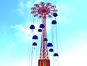 | TRCS | N/A | 280 Feet (85.34 m) |
| Paratrooper | RO | Star_Ranger4 | Nailed | 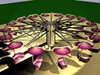 | FRCS | N/A | N/A |
| Pendulum Ride Pack - Zamperla Nitro | SW | Star_Ranger4 | Nailed | 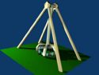 | FRCS | N/A | N/A |
| Pendulum Ride Pack - Frisbee | SW | Star_Ranger4 | Nailed | 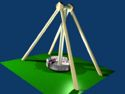 | FRCS | N/A | N/A |
| Pendulum Ride Pack - Giant Frisbee | SW | Star_Ranger4 | Nailed | FRCS | N/A | N/A | |
| Planetary Wheel | WH | Star_Ranger4 | Nailed | 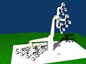 | FRCS | N/A | N/A |
| Polyp Ride | RO | Star_Ranger4 | Nailed | 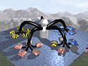 | FRCS | N/A | N/A |
| Rainbow | SW | WCBoudreaux | Nailed | 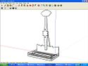 | FRCS | N/A | N/A |
| Rocket Astro Jets | RO | Surfingoz | Nailed | 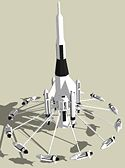 | FRCS | N/A | N/A |
| Rotor (Chance) | RO | Star_Ranger4 | Nailed | 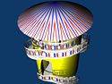 | FRCS | N/A | N/A |
| Rotor (Western Themed) | RO | Star_Ranger4 | Nailed | 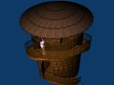 | FRCS | N/A | N/A |
| Round-Up | RO | GermanTaco | Nailed | 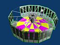 | FRCS | N/A | N/A |
| Scrambler | RO | Star_Ranger4 | Nailed | 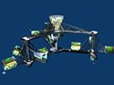 | FRCS | 60 Feet (18.29 m) | 12 Feet (3.66 m) |
| Seattle Wheel | WH | Star_Ranger4 | Nailed | 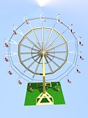 | FRCS | N/A | N/A |
| Shepherd Galaxy Wheel | WH | Star_Ranger4 | Nailed | 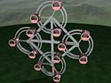 | FRCS | N/A | N/A |
| Shepherd Roll-O-Liner (1940) | SW | Star_Ranger4 | Nailed | 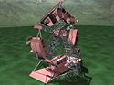 | FRCS | N/A | N/A |
| Shepherd Roll-O-Plane | SW | Star_Ranger4 | Nailed | 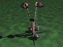 | FRCS | N/A | N/A |
| Skycoaster | CA | Jungleguy | Nailed | 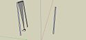 | ORCS | 530 Feet (161.54 m) | 270 Feet (82.3 m) |
| Skyswatter | VT | Star_Ranger4 | Nailed | 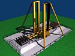 | FRCS | N/A | N/A |
| Skywheel (Chance Version) | WH | Star_Ranger4 | Nailed | 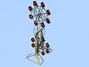 | FRCS | N/A | 92 Feet (28.04 m) |
| Spacewheels (Velare) | WH | Star_Ranger4 | Nailed | 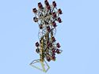 | FRCS | N/A | 92 Feet (28.04 m) |
| Spillman Doublewhirl | RO | Star Ranger4 | Nailed | 
| FRCS | N/A | N/A |
| Spinning Cups | RO | Star_Ranger4 | Nailed | 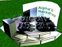 | FRCS | N/A | N/A |
| Stantzel Strat-O-Liner | RO | Star_Ranger4 | Nailed | 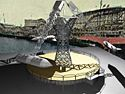 | FRCS | N/A | 90 Feet (27.43 m) |
| Starflyer | RO | Star_Ranger4 | Nailed | 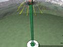 | FRCS | N/A | N/A |
| Super Looper | TR | Star_Ranger4 | Nailed | 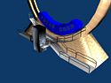 | TRCS | 39 Feet (11.89 m) | 55 Feet (16.76 m) |
| Swing Ship Pack The Bounty Pharoah's Fury Sea Dragon The Shuttle | SW | Star_Ranger4 | Nailed | 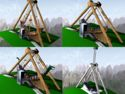 | FRCS | 65 Feet (19.81 m) | 53 Feet (16.15 m) |
| Tagada | RO | Star_Ranger4 | Nailed | 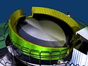 | FRCS | N/A | N/A |
| Tannenbaum | RO | Surfingoz | Nailed | 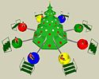 | FRCS | N/A | N/A |
| Techno Jump | RO | GermanTaco | WIP | 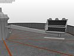 | FRCS | N/A | N/A |
| Thunder Bolt/Alpine Bobs/Flying Bobs | RO | WCBoudreaux | Nailed | N/A | FRCS | 57 Feet (17.37 m) | 23 Feet (7.01 m) |
| Tilted Whirler | RO | Star_Ranger4 | Nailed | 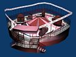 | FRCS | N/A | N/A |
| Tilted Whirler G5 | RO | Star_Ranger4 | Nailed | FRCS | N/A | N/A | |
| Tivoli Orbitor | RO | djfriktion/Star_Ranger4 | Nailed | 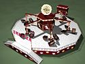 | FRCS | N/A | N/A |
| Tivoli Scorpion | RO | N/A | Wanted | 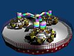 | FRCS | N/A | N/A |
| Top Scan | RO | Star_Ranger4 | Nailed | 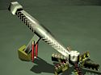 | FRCS | N/A | N/A |
| Top Spin | WH | Surfingoz | Nailed | 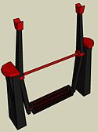 | FRCS | N/A | 33 Feet (10.06 m) |
| Tornado | RO | Star_Ranger4 | Nailed | 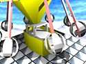 | FRCS | 45 Feet (13.72 m) | 23 Feet (7.01 m) |
| Trabant | RO | WCBoudreaux | Nailed | 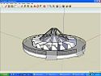 | FRCS | 57 Feet (17.37 m) | 12 Feet (3.66 m) |
| Traver Circle Swing | RO | Star_Ranger4 | Nailed | 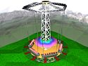 | FRCS | N/A | N/A |
| Waltzer/Super Waltzer | RO | Star_Ranger4 | Nailed | 
| FRCS | N/A | N/A |
| Watkins Rampage | WH | Star_Ranger4 | Nailed | 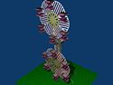 | FRCS | N/A | N/A |
| Wave Swinger 1 | RO | Doughnuts | Nailed | 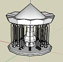 | FRCS | 34 Feet (10.36 m) | N/A |
| Whip | TR | Wanted | 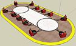 | TRCS | N/A | N/A | |
| Wipeout | RO | WCBoudreaux | Nailed | 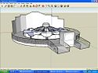 | FRCS | 58 Feet (17.68 m) | 10 Feet (3.05 m) |
| Yo-Yo | RO | Mikey98/Star_Ranger4 | Nailed | 
| FRCS | N/A | N/A |
| Zipper | RO | Surfingoz | Nailed | 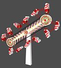 | ORCS | N/A | 56 Feet (17.07 m) |

{kind=link}
{kind=link}
{kind=link}
{kind=link}
{kind=link}
{kind=link}
{kind=link}
{kind=link}
{kind=link}
{kind=link}
{kind=link}
{kind=link}
{kind=link}
{kind=link}
{kind=link}
{kind=link}
{kind=link}
{kind=link}
{kind=link}
{kind=link}
{kind=link}
{kind=link}
{kind=link}
{kind=link}
{kind=link}
{kind=link}
{kind=link}
{kind=link}
{kind=link}
{kind=link}
{kind=link}
{kind=link}
{kind=link}
{kind=link}
{kind=link}
{kind=link}
{kind=link}
{kind=link}
{kind=link}
{kind=link}
{kind=link}